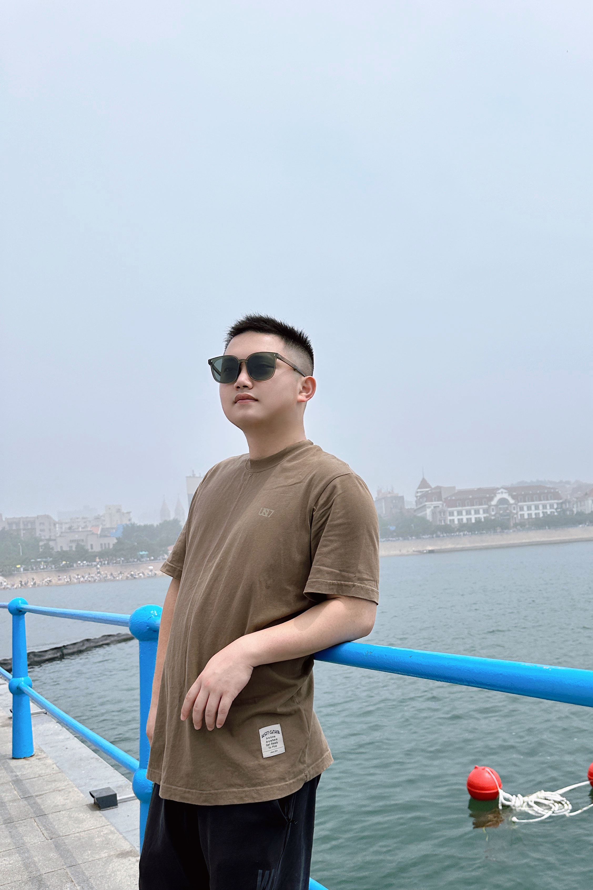
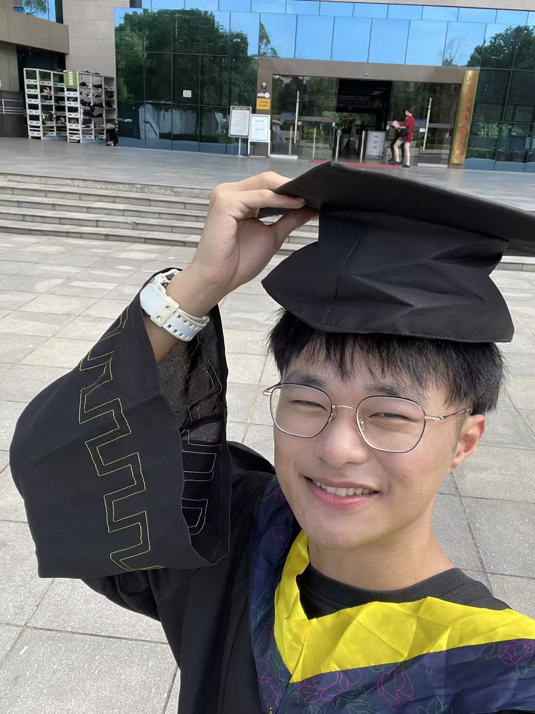
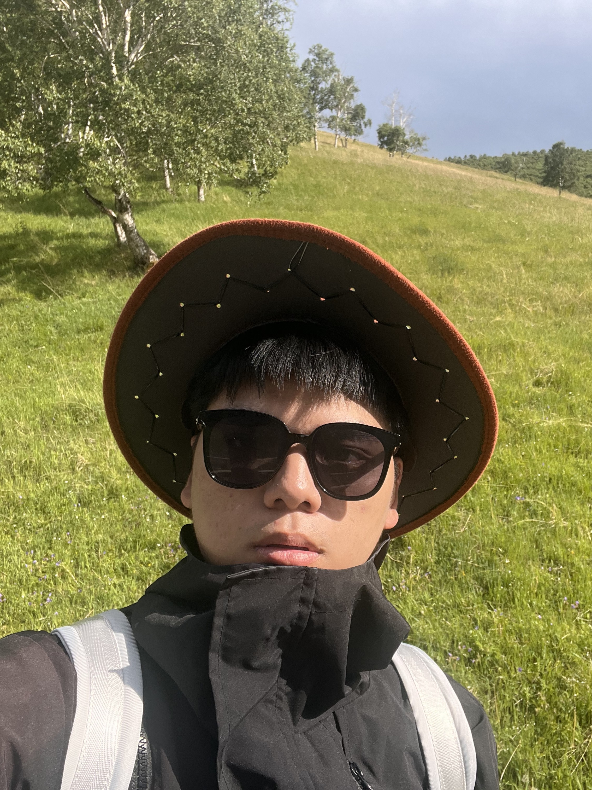
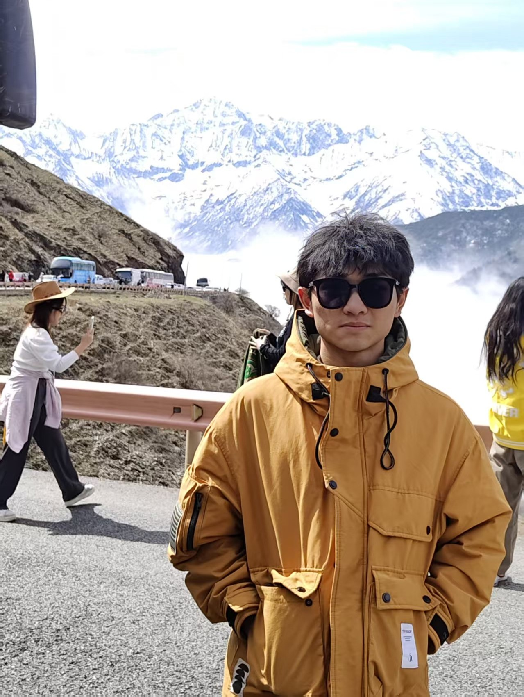
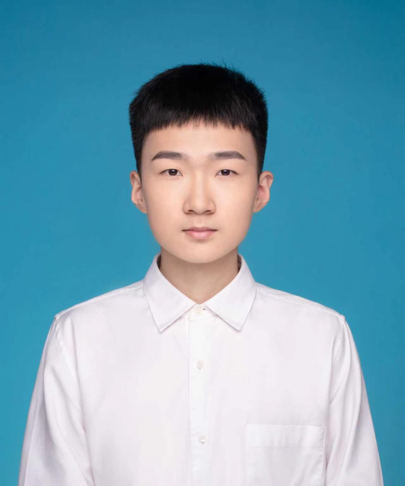
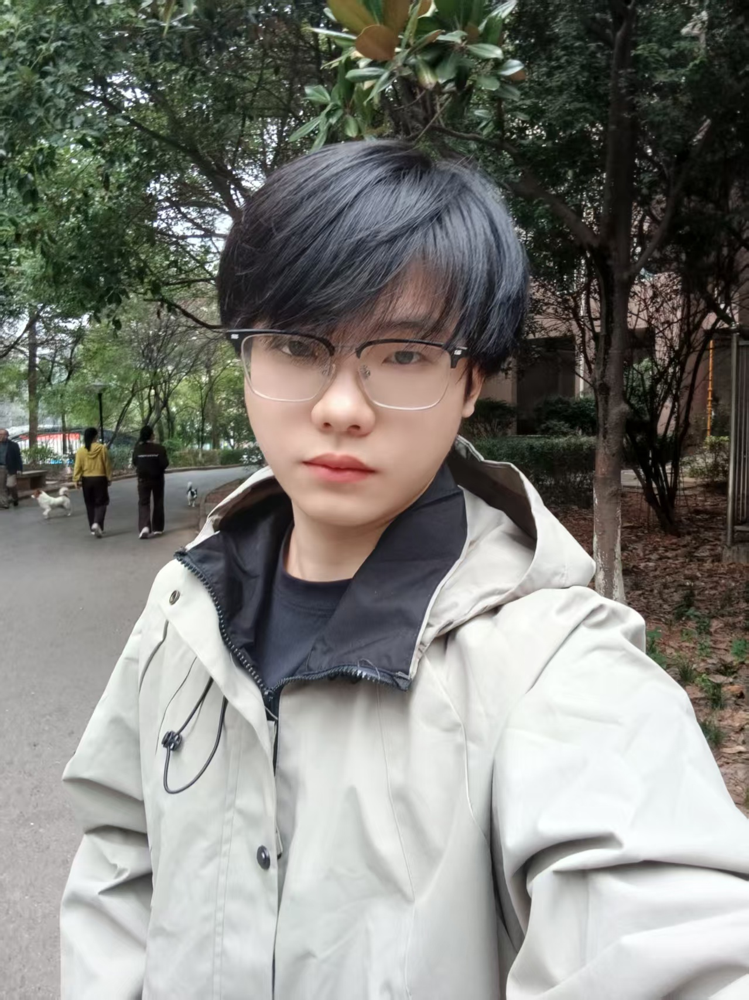

团队成员
指导老师
Faculty
郑洲洲 博士
湖南农业大学机电工程学院讲师、硕士生导师。2025年6月获西北农林科技大学农业机械化工程博士学位。2023年至2024年，获国家留学基金委（CSC）资助赴加拿大麦吉尔大学进行博士联合培养。
主要研究方向为果园采摘机器人、果园信息感知技术与果树表型解析。以第一作者在《Computers and Electronics in Agriculture》、《Expert Systems with Applications》等国际顶级期刊发表SCI论文10余篇，其中中科院一区论文6篇，累计影响因子87.1。
主要研究方向为果园采摘机器人、果园信息感知技术与果树表型解析。以第一作者在《Computers and Electronics in Agriculture》、《Expert Systems with Applications》等国际顶级期刊发表SCI论文10余篇，其中中科院一区论文6篇，累计影响因子87.1。
博士研究生
PhD Students
傅嘉辉
傅嘉辉，拥有农业工程与信息技术专业硕士学位，研究方向为林果采收机器人果园信息感知技术，他曾在国家环境保护土壤环境管理与污染重点实验室参与过相关研究工作，他热衷于利用先进的机器学习算法、深度学习模型应对果园非结构化环境中的感知挑战，热衷于探索新的技术。
硕士研究生
Master's Students
郑彬
本科毕业于湖南农业大学计算机科学专业，现为湖南农业大学机电工程学院农业工程与信息技术专业在读硕士研究生。目前主要研究方向为计算机视觉与深度学习，聚焦于植物智能识别、计数与估产研究。致力于将计算机技术与农业场景相融合，依托视觉算法实现作物信息自动解析，服务于智慧农业，现已在《smart agricultural technology》发表相关论文一篇。

陈标
本科毕业于湖南农业大学东方科技学院机械设计制造及其自动化专业，现于湖南农业大学机电工程学院攻读农业工程与信息技术专业（农业机械及智能装备方向）硕士研究生。主要研究方向为油茶的振动采收，重点研究油茶果的振动采收脱落机理。致力于克服油茶果的“花果同期”的生物学特性和其大多在丘陵山区种植的地理学特性，研制出一台单人可携行的手持式油茶振动采收装置。
武雨洁
本科毕业于商丘工学院机械电子工程专业，现为湖南农业大学农业工程与信息技术专业在读硕士研究生。目前主要研究方向为农业计算机视觉，聚焦于基于图像增强与分割技术的复杂农田环境下油菜生长周期监测。致力于将机械电子的工程背景与深度学习算法相融合，克服复杂农田光照与遮挡干扰，实现对油菜生长状态的精准感知与解析。

田文标
本科毕业于湖南农业大学农业机械化及其自动化专业，现为湖南农业大学农业工程与信息技术专业在读硕士研究生。目前主要研究方向为农业装备智能化，聚焦于嵌入式软硬件一体化与视觉识别、参数感知技术的系统集成。致力于将农业机械化的工程背景与嵌入式系统开发相融合，克服田间光照变化与机身振动干扰，实现从视觉识别、参数感知到执行端的智能作业与效率提升。

周俊杰
本科毕业于湖南农业大学农业机械化及其自动化专业，现为湖南农业大学机械专业在读硕士研究生。目前主要研究方向为油茶果振动采收装备，聚焦于基于机械振动原理的油茶果采收机构设计。致力于将机械设计的工程背景与田间采收需求相融合，克服油茶果采收分离难、损伤率高的问题，实现油茶果高效低损机械化采收。

刘峻宇
本科毕业于西藏民族大学网络工程专业，现为湖南农业大学农业工程与信息技术在读硕士研究生，目前主要研究方向为视觉感知与机械臂控制，基于ROS2搭建视觉—机械臂协同系统，完成目标识别定位、抓取位姿估计与运动控制，具备STM32单片机开发及外设驱动、执行机构控制经验，能够贯通从视觉识别、控制算法到嵌入式执行端的系统联调，致力于提升农业采摘机器人的识别准确率与作业效率。
本科生
Undergraduates
李佳辰
湖南农业大学农业机械化及其自动化在读本科生。过去参与并研究过点云视觉神经网络与手持油茶振动采收机设计等项目，并在节能减排赛事中斩获省赛一等奖、国赛三等奖。
胡晶
湖南农业大学车辆工程专业在读本科生。研究方向为基于语义分割的油茶叶片病虫害识别。现阶段在课题组跟随老师参与本科科研竞赛，在项目实践中积累模型训练与部署相关经验。
张芳
湖南农业大学农业车辆工程专业在读本科生。通过推免进入南京农业大学机械制造及其自动化专业开展硕士阶段研究。主要研究方向是机器视觉，拥有多项结构设计项目经历，探索机器视觉在农业工程中的应用。